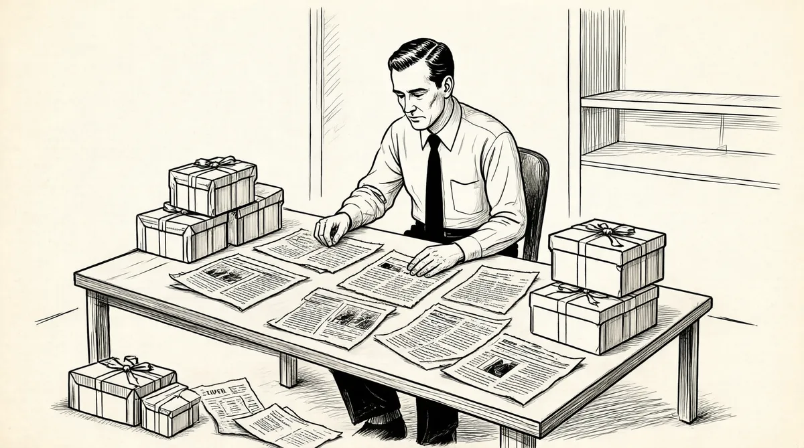

第24章 火车头

沃伦和苏珊看起来和普通人一样，他们保持低调，他们的房子虽然大但并不奢华，后院有一个供孩子们玩的小木屋；后门也从不上锁，邻近的孩子们可以在这儿进进出出。现在，巴菲特夫妇在他们不同的轨道上逐渐开始加速。苏珊的当地计划表上增加了一站又一站，而沃伦朝着“美元山峰”进发，这是一个永不停止的旅程。
1958年之前，他会径直买一只股票，然后就等着这个“烟蒂”点燃起来。接着，他通常会出售股票，去买另一只他更想得到的股票，有时不免会带有一丝遗憾，因为他的雄心受到合伙公司资本的限制。
但是，现在他管理着7个合伙公司，加上巴菲特–巴菲特公司以及他自己的钱，资金已经超过了100万美元。1这使他能在完全不同的范围内操作。他在生意上的伙伴除了斯坦贝克、纳普、勃兰特、科文、施洛斯以外，又增加了芒格。他们两个人每个月的电话账单惊人——按照他们的消费标准。芒格又把他介绍给朋友罗伊·托尔斯，瘦瘦高高的前海军战斗机飞行员，他脸上总带着温和的笑容，喜欢自己一个人快速思考——除了偶尔会抛出一些讽刺的有力反驳，这使得人们“希望带些创可贴在身边”，一个朋友这样评论。和芒格一样，巴菲特能够机敏应对。他将托尔斯当作自己的好友。这种为他的事业征集志愿者的诀窍，已经创造了一个很大的支持网络，虽然只是松散地组织在一起。沃伦会或多或少不自觉地和他的支持者们像汤姆·索亚那样探险、钻研，因为他的兴趣增长太快，以致他自己一个人再也不能完全实施每一个细节了。
简单地坐在书房，在《证券分析》或《穆迪手册》中挑选股票的日子，已经一去不复返。相反，他开始在那些需要时间和计划去实施的有利可图的大型项目上下功夫——比在美洲国家火灾保险公司身上花的还要多。有时，这些项目会碰上复杂甚至戏剧性的情况，他的注意力将会持续几个月，有时一连几年都得放在那上面。有时几个投资项目同时操作。对他的家人而言，对绝大部分时间他都缺席的情况已经习以为常，而现在项目规模的扩张更加重了这一趋势，但是他和朋友们的关系却越发紧密了。
第一个复杂的事件涉及一家叫作桑伯恩地图的公司，该公司发行美国所有城市的精密地图，图上标示了电力线、自来水总管道、车道、建筑工程、房顶结构、应急楼梯等，这种地图主要是保险公司购买。2这门生意没有赢家，因为随着保险业的并购，顾客群正在慢慢萎缩。不过45美元一股的价格很便宜，因为单单桑伯恩公司的证券投资组合每股就值65美元。但是为了能掌握这些投资组合，沃伦需要的不仅仅是合伙公司的资金，还有其他人的帮助。
从1958年11月开始，他在桑伯恩公司上投入了合伙公司1/3的资产。他也为自己和苏珊买了这只股票，他让艾丽斯姑姑、父母、姐妹们都买了。他还将自己有关桑伯恩公司的想法告诉了科文、斯坦贝克、纳普、施洛斯。其中一些人把这看成是他的好意而买了。他从中提取利润的一定比例，这是使他自己的资产产生杠杆作用的一个途径。为了控制更多的股票，他增加了从高中起就一起玩儿弹珠的同伴唐·丹利、他父亲最好的朋友维克·史皮特勒、多蒂的丈夫霍默·罗杰斯，以及霍华德·布朗，汤姆·纳普工作的特雷迪–布朗–莱利经纪公司的老板。同时沃伦还把他的朋友弗雷德·库尔肯的姨妈凯瑟琳·埃伯菲尔德和母亲安妮·戈特沙尔特也带进来，因为以前他没有让她们加入合伙公司，这次强烈推荐这只股票，是因为他认为这次是一件很确定的事情。最终，他掌控了足够多的股份，进入了董事会。
1959年3月，沃伦例行去纽约出差，住在安妮·戈特沙尔特位于长岛的一栋小小的殖民时期的白色房子里。现在安妮·戈特沙尔特和她的姐姐已经把他看成是死去很久的儿子弗雷德的替代者。沃伦在那里放了备用的内衣和睡衣，戈特沙尔特会准备汉堡包做他的早餐。在这种旅行中，他总会列出10~30件他想完成的事情。他会去标准普尔的图书馆查些信息，参观一些公司，拜访一些经纪人，通常会和纽约的勃兰特、科文、施洛斯、纳普待在一起。
这次特别的旅行长达10天。他要和合伙公司的潜在客户坐下来谈谈，而且还有一个重要的约会：作为董事会成员，第一次出席桑伯恩公司的会议。
桑伯恩公司几乎全部由保险公司的代表组成——它最大的客户——因此，除了开完会以后不会打上一轮高尔夫球以外，董事会更像是个俱乐部。没有一个董事会成员拥有超过象征数量的股票。3会上，沃伦建议将公司的投资产品分给股东们。但是，自大萧条和“二战”以来，美国企业对待钱就像是稀有商品一样要珍藏和保管。即使经济调整已经过去了很长一段时间，这种想法还会自动产生（关于该现象的前提人们尚未调查核实）。董事会对这个主意做出的回应是，将证券投资组合从地图主业中剥离是很荒谬的。会议快结束的时候，董事们打开雪茄盒开始分发雪茄，他们吞云吐雾，沃伦坐在一旁却气得快冒烟了。“那是用我的钱买的雪茄。”他想。在返回机场的路上，他从钱包里拿出孩子们的照片，看着他们，他的血压才降下去。
遭遇挫折的沃伦决定，他将代表其他股东，从这些不称职的董事们手中夺走公司，因为他们要比那些人更应该拥有这家公司。因此，巴菲特集团，包括弗雷德·斯坦贝克、沃尔特·施洛斯、艾丽斯·巴菲特、丹尼尔·科文、亨利·勃兰特、凯瑟琳·埃伯菲尔德、安妮·戈特沙尔特和其他一些人继续购买。沃伦还动用了新注入合伙公司的资金，还让霍华德把他的一些经纪客户吸引进来。也许沃伦正在帮他父亲财务上的忙，即使他正在逐渐掌握这家公司的时候。
不久，那些对沃伦比较友好的人，包括著名的基金管理人菲尔·卡罗特（他曾经在沃伦这儿听说然后买了格瑞夫兄弟桶业公司和克利夫兰毛料厂），一共拥有大约24000股，掌握了有效的控制权，沃伦认为该行动了。股票市场正处于高位，他希望桑伯恩公司能在合适的时机出货。战略咨询博思–艾伦–汉密尔顿公司已经提交过计划，建议桑伯恩公司这么做4，但是关键点是纳税。如果出售证券投资组合，公司需要支付大约200万美元的税款。沃伦提供了类似洛克伍德公司置换股票以避税的技巧，这是一个可以做到完全不用纳税的解决方案。
下一个董事会议召开时，除了又有一些投资人的钱随着雪茄的烟雾而消失之外，其他什么也没干成。在巴菲特返回机场的路上，他不得不再次看孩子们的照片，好让自己平静下来。三天以后，他威胁董事会，如果董事们在10月31日之前不采取行动，他将召集一个特别会议以控制公司。5他已经失去耐心了！
现在董事会别无选择，只得同意分割两部分业务。可即使这样，如何处理纳税问题依然存在。一个保险代表说：“那就让我们吞下那笔税款吧。”
于是我说：“等一下，‘让我们’，谁是‘我们’？如果在座的每一个人都希望按人头承担，那很好。可是如果你希望按各自拥有的股份比例承担，你只用承担10股股票的税额，而我要承担24000股的税额，那就算了吧！”他说要自己吞下这200万美元的税额，只是因为他不想很麻烦地操作股票回购。6我记得那时又分发雪茄了。我为每一根雪茄支付30%的钱，而我是唯一不抽雪茄的人。他们应该为我的泡泡糖支付1/3的钱。
董事会终于屈服了。于是，在精力、组织以及意愿的压力下，1960年年初沃伦赢得了战斗。桑伯恩公司向股东们提出了洛克伍德式的要约，用一定比例的证券投资组合交换股票。7
这次桑伯恩公司的交易设置了一个“高水位标志”：巴菲特可以利用他的大脑和合伙公司的钱改变一个公司的方向，即使它顽固，即使它不情愿。
在这个故事里，巴菲特不断地往返于纽约和奥马哈之间，一直在为桑伯恩公司这个项目努力，他要搞清楚到哪儿去弄到他需要的股票，如何让董事会合拍，以及怎样才能不使自己吞下那笔税金，还同时在寻找其他的投资妙计，成千上万个主意整天在他的脑子里盘旋飞舞，滴答作响。在家里，他总是消失到楼上去看书和思考。
苏珊把他的工作理解为一项神圣的使命。可是，她仍然努力将他带离他的研究而融入家庭生活：有计划的外出，度假，在餐馆吃晚饭。她有一句名言：“任何人都可以做父亲，你也必须做父亲。”8然而，她是在和一个从没拥有过她所说的那样的父亲的人说这番话。“我们去野马餐厅吧！”她会说，然后用车载着一帮周围的小孩狂吃一顿汉堡包。坐在桌旁，如果有什么有趣的事情发生，沃伦会大笑，也会表现得很投入，不过他很少说话。他的思维在别的地方。9有一次在加利福尼亚度假，一天晚上他带着一群孩子去迪士尼乐园玩，他坐在长凳上看书，而那些孩子们则到处乱跑，大家都自得其乐。10
这时彼得接近两岁，豪伊5岁，苏茜6岁半。苏茜有自己的粉红格子花布王国，那是一张带天篷的床，要沿着单独的楼梯上去。豪伊用破坏行为来测试父母，看看到什么程度会引起他们的反应。他捉弄很晚才开始说话的彼得，好像彼得是一个科学实验品一样，去刺激他，看他什么反应。11苏茜管理他们两个以控制事态发展。她开始找出办法报复豪伊，有一次她教唆他用叉子在牛奶袋的底部戳洞。当豪伊正自得其乐地看牛奶喷到厨房桌子上到处都是时，苏茜跑到楼上大叫，“妈妈——豪伊又在干坏事了！”12沃伦只是简单地求助于苏珊，让她去应付儿子充满爆发力的精力。而豪伊记得他的母亲几乎“从不生气，她总是支持我们”。13
苏珊巧妙地处理这一切，扮演着1960年时标准的美国中上阶层妻子的角色；每天她以标志性的装扮示人，裁剪得体的裙子或者裤装，通常是灿烂的黄色，以及光亮蓬松的头发；完美地照顾着她的丈夫和家庭；成为社区团体的领导人；优雅地招待丈夫生意上的伙伴，似乎这比把一顿“斯沃森电视晚餐”扔进烤炉要轻松得多。沃伦让她雇用帮手，很快一连串的互惠工人就住进了二楼带卫浴的空气流通、采光良好的房间。新来的女管家莱莎·克拉克承担了苏珊的一些负担。通常，苏珊的一天是从中午主持慈善午宴开始的；放学以后，接送苏茜去蓝色小鸟团。苏珊总是将自己描绘成一个简单的人，不过逐渐地，她给自己的生活增加了一层又一层复杂的元素。她正在筹建一个叫“志愿者局”的团体14，专门在奥马哈大学做办公室工作以及教游泳。“你也可以成为保罗·李维尔”是该团体的座右铭，借用了一个通过个人自我牺牲的勇敢行动拯救整个国家的个体形象。
和保罗·李维尔一样，苏珊也无意向上爬。15她在家庭责任和需要关注的越来越多的人之间来回碰撞，其中很多人生活穷困，或者在某些方面受到过创伤。
她最亲密的朋友贝拉·艾森伯格是奥斯威辛集中营的幸存者，在集中营被解放后，她来到美国奥马哈。她把苏珊看成是可以在凌晨4点打电话求助的人。16另外一个朋友是尤妮斯·丹尼伯格，在她还是个孩子的时候，她发现了上吊自杀的父亲。在沃伦家这么一个富裕的白人家庭里，最难得的是他们还有黑人朋友，包括棒球界最有威胁性的投手鲍勃·杰布森和他的妻子沙琳。可在1960年，如果你是个黑人，即使是个明星运动员也不代表什么。“那个时代的奥马哈，很少会看到白人和黑人在一起。”巴菲特儿时的伙伴拜伦·斯沃森说。17
苏珊把手伸向每一个人。事实上，麻烦越多的人，她越愿意帮助。她对几乎不认识的人的个人生活充满浓厚的兴趣。沃伦回忆了一件事情，在一次橄榄球比赛期间，他去厕所，而她在小卖部排队。几分钟以后他回来时发现，站在苏珊后面的一位妇女正在和她说话，“我之前从没对任何人讲过这件事情……”苏珊听着，露出被吸引的表情。几乎她遇到的每一个人都会在这样的关注下散发光辉，并为之感动。但是，即使是最亲密的朋友，苏珊也总是小心而不愿分享她自己的问题。
在家里，她同样扮演施救天使的角色，尤其是对她的姐妹。和苏珊一样有音乐天分的多蒂创立了歌剧协会。不过，她似乎很空虚，就像有个人评价的那样，“虽然不快乐，但内心强大”，她保持着愉快的表象，但她告诉苏珊，她从来不哭，因为她一旦哭，将永远不会停止。她的丈夫霍默因为不明白妻子而很受挫败。可是他们俩仍保持着活跃的社交安排。晚上，在喝酒和狂欢中，他们两个年幼的儿子到处闲逛。有时，霍默会粗暴地惩罚他们，或者多蒂会残酷地取笑他们——于是，苏珊像母亲一样照顾她的外甥和自己的孩子们。
她还帮助老巴菲特夫妇，霍华德的健康问题和意识形态正在成为他们的负担。
不过，霍华德的焦虑和身上18个月的神秘症状更是问题。尽管去了明尼苏达州罗切斯特的梅约诊所，可医生们还是不能诊断他的病情。18最后，1958年5月，霍华德被告知得了结肠癌，急需手术治疗。19沃伦为这个诊断而心烦意乱，而且为这个他认为不可原谅的延误诊断生气。从那时起，苏珊开始有选择地告诉他有关他父亲的病情。20她保持着家庭的正常安排。在霍华德手术和漫长的恢复期间，她还不遗余力地支持利拉。她很高兴地做所有这些事情。不只这些，在危急关头，她的镇静、安慰让每个人都可以依靠。她帮助大一点儿的孩子理解这种疾病，并且让包括小彼得在内的每个孩子都定期看望祖父。豪伊在下午和霍华德一起看大学橄榄球赛，霍华德坐在装有软垫的躺椅上，在比赛当中不断地倒戈，为那些就要输掉的球队加油。当豪伊问他为什么时，他说：“他们现在是弱者。”21
在他父亲经受严峻考验期间，自始至终沃伦都是用生意来分散自己的注意力。他埋首于《美国银行家》或者《石油和天然气杂志》，只有在他走进厨房，从只有他才可以碰的木板箱里取一些爆米花和百事可乐时，才会有短暂的中断。
但是不知为什么，尽管为父亲生病而苦恼，在家人眼里安静内向的沃伦开始频频出现在公众场合，而不管家里正在发生什么事。他显得是一位权威，一个在向他的听众传输能量的电子充电器。“不管他去哪儿，他总是透着这种气质。”查克·彼得森说。22而让查理·芒格印象深刻的是，沃伦·巴菲特经常很有说服力地谈论投资以及合伙公司。他募集资金的速度和他说话一样快，但是还不及他投资的速度。
在他们几乎每天都进行的电话通话中，芒格听沃伦讲投资和募集资金的经历，对巴菲特自然的推销术很好奇。由于亨利·勃兰特在为他探路，他去纽约出差就更为频繁。1960年是一个分水岭，现金潮水般涌进了合伙公司的金库。年初，沃伦的叔叔弗雷德和婶婶凯蒂向巴菲特联合公司投了将近8000美元。通过查克·彼得森的关系，又有51000美元进了安德伍德。那时，“查克对我说，‘我想邀请你和苏珊来吃晚饭，和安琪夫妇见个面。’我不认识他们。查克说他们都是医生，是真正聪明的人。”
卡罗尔和比尔·安琪夫妇住在彼得森家的街对面，比尔·安琪是心脏病专家，也是个异想天开的古怪人。冬天他会整夜不睡，往他前院喷水，然后做一个光滑的、像玻璃一样毫无瑕疵的雪人，就像一个圆圆胖胖的他自己的复制品，站在结冰的“池塘”旁边。他的妻子专门从事儿科研究。
我们接上他们，这样车上就有6个人。我们朝奥马哈乡村俱乐部方向进发。卡罗尔·安琪长得很美，打扮时尚。吃晚饭期间，她的眼睛就没有离开过我。我的意思是，她只是被迷住了。我疯狂地讲世界上的所有事情，拼命地想使她印象深刻，而她就在那儿听我讲的每一个字。
我们离开乡村俱乐部开车返回。在车里，一路上她的眼睛也一直盯着我。我们把安琪夫妇送回去，然后我对查克说：“今天晚上我给人留下了很深的印象。”他回答：“不，傻瓜，她是个聋子。她在读你的唇语。”因为我不停地说，所以她就不停地看着我。23
不过他肯定是给人留下了深刻印象，因为后来安琪夫妇在山顶房子饭店招待他们认识的十几个医生吃晚饭的时候，比尔·安琪建议他们成立一个合伙公司，每人投资1万美元。其中一个医生问：“我们输掉所有的钱怎么办？”比尔·安琪给了他一个厌烦的表情，然后说：“那我们就再成立一个。”
巴菲特的第八个合伙公司——埃姆迪（Emdee）成立于1960年8月15日，资金11万美元，那个医生因为担心自己的钱会全部亏掉而没有加入。
还有其他一些怀疑论者。在奥马哈，并不是每个人都喜欢有关沃伦·巴菲特的事情。有些人认为，这个年轻的高手一文不值，他的权威性实际是种不相称的傲慢。有些人不认同一个无名之辈能奋斗成功。奥马哈一个显赫家族的成员和五六个人在黑石酒店边吃边聊的时候，谈到了巴菲特的名字，说：“一年之内他将一文不名，就给他一年，他就会消失。”24柯克帕特里克·佩蒂斯公司的一个合伙人（霍华德的公司在1957年和该公司合并）一遍又一遍地说：“陪审团还没盯上他。”25
那个秋天，充满泡沫的股票市场起飞。经济正在温和衰退，因为苏联看起来就要赢得军备竞赛而使整个美国心情沮丧。但是当约翰·肯尼迪赢得总统大选后，充满活力的年青一代在管理上的改变提振了整个国家的士气。在早期的演讲中，肯尼迪设定了一个目标：把人类送上月球。市场迅速飞涨，再一次需要和1929年作比较了。沃伦从没有经历过一个投机市场，但他保持了平静。似乎这就是他一直在等待的时刻。他没有像格雷厄姆可能做的那样撤退，反而做了些异常的事情。他加速为合伙公司筹集资金。
他把伯蒂和她的丈夫，他在阿尔伯克基的叔叔乔治，以及他的堂兄比利带入了最初的巴菲特联合公司。他的朋友约翰·克利里的合伙人韦恩·伊夫斯也加入了。最后，他终于让弗雷德·库尔肯的姨妈凯瑟琳·埃伯菲尔德和母亲安妮·戈特沙尔特也进入了合伙公司。她们的加入说明，他认为这个时机不仅非常适合而且安全。
另有三个人加入了安德伍德，一次在纽约听完本杰明·格雷厄姆的讲座以后，沃伦在雨中等出租车，这时他遇到了小弗兰克·马修斯，前海军部长的儿子（就是在这位海军部长面前，范尼塔·梅·布朗宣布要和沃伦结婚），马修斯也成为一个合伙人。26沃伦成立了他的第九个合伙公司——安投资公司，这是为奥马哈另一个显赫家族的成员伊丽莎白·史托斯而成立的。他还让拥有城里最精美的服装店的玛蒂·托普和她的两个女儿及两个女婿，以25万美元加入了他的第十个合伙公司——巴菲特–TD。
作为投资顾问，他可以合法地拥有100个合伙人，而不需要在美国证券交易委员会登记。随着合伙公司的发展，他开始鼓励人们非正式地组成一个团队，然后再以单个投资者的身份加入进来。最终，他已经可以把人们的钱汇合起来。27后来他描述这样的战略时是持质疑的态度的——不过这确实奏效。得到更多资金、挣更多钱的强迫性驱使着他不断向前。沃伦忙忙碌碌、风风火火，往返纽约的频率堪称疯狂。他开始遭受和紧张相关的背痛之苦，当他坐飞机的时候病情就会加重，他用了各种办法和东西来减轻疼痛——除了待在家里。
至此，他的名字已经像一个秘密一样传播。“和沃伦·巴菲特一起投资会让你变富有。”可是现在规则已经改变了：到1960年，至少有8000美元才能跨入门槛。而且，他再也不需要请求别人和他一起投资了，他们必须自己有这样的想法才行。人们不仅对他在干什么一无所知，而且他们还必须把自己放在那个位置上（尽管丹·莫奈或者其他一些有帮助的代理人因为需要通常会知道一些）。这将他们转化为巴菲特的追随者，并且减少了他们对他做的事情抱怨的机会。以前他是请别人帮忙，而现在是他给别人帮忙。如果人们要从合伙公司拿走钱会为此觉得亏欠，让别人开口请求使他心理上觉得被赋予了重任。在很多情况下，在他以后的人生中，他开始经常使用这个技巧。他一方面得到了他想要的东西，另一方面这似乎也抚平了他一直以来因要对别人的命运负责而产生的恐惧。
虽然不安全感和以前一样肆虐，但他的成功以及苏珊的关心和调教已经让他有了改观。他开始显得有力量，而不是脆弱的。很多人乐意请求他为他们投资。巴菲特于1961年5月16日成立了他的第十一个，也是最后一个合伙公司：巴菲特–霍兰德。这个合伙公司是为迪克·霍兰德和玛丽·霍兰德而设的。他们是沃伦通过他的律师兼合伙人丹·莫奈认识的朋友。当迪克·霍兰德决定投资合伙公司时，他的家庭成员施压让他不要这么做。但他很清楚巴菲特的能力，霍兰德说，即使是在奥马哈，还是有人“偷偷地笑”沃伦的野心。281959年，合伙公司的业绩表现高出市场6个百分点。1960年资产价值一跃而至将近190万美元，超过市场29个百分点。比单个年度的利润更让人印象深刻的是复合增长率。如果在第二个合伙公司，即巴菲特基金里最初投资1000美元，4年以后，这1000美元变成了2407美元。而如果投资于道琼斯平均工业指数，则只值1426美元。29更重要的是，他获得较市场更高的回报时，整体承担的风险也较小。
巴菲特收取的费用经过再投资，到1960年年底已经为他挣了243494美元。现在合伙公司中超过13%的财产都属于他。虽然他在合伙公司的份额增加了，但他为合伙人们挣的钱也已经不单单是让他们感到高兴了，很多人对他怀着敬畏之心。
在他们中间，埃姆迪合伙公司的合伙人比尔·安琪排在最前面。比尔努力让自己成为沃伦的“搭档”，在巴菲特家房子的三楼建造了带有轨道的一整套巨大的火车模型，以前这里是个舞场，而现在它是巴菲特家的阁楼。巴菲特内心深处的童心被唤醒了，儿时，每个圣诞节他都在布兰迪斯商店徘徊，对那个自己不可能拥有的巨大、神奇的火车模型充满了渴望。现在，当安琪在为创造沃伦儿时的幻想而努力工作时，他就在一旁“监工”。
沃伦还试图说服查克·彼得森共同投资。“沃伦，你一定疯了，”彼得森说，“我为什么要为你自己拥有的火车而和你平摊开支？”但是沃伦并没有听进去，他被想拥有火车和装备的热情激励着。“你可以过来使用它。”他说。30
火车填满了以前舞场的大部分空间。整个模型立在桩上，而过道在下面，这样就可以从里面观察这个立体模型。三辆火车头带着长长一串车厢沿着巨大的螺旋形轨道赛跑。他们经过村庄，穿过森林，消失在隧道里，又爬上大山，穿过山谷，按照标记停靠和起步，可是当巴菲特发动引擎时，火车却经常出轨，足以让人心惊胆战。31
火车变成了沃伦的最爱。他的孩子们被禁止接近。到现在，他对钱的痴迷以及对家庭的一无所知，还是朋友间的笑谈。“沃伦，那是你的孩子们——你认出他们了，是吗？”人们会这样说。32当他不出差的时候，人们会发现他在房子里漫步，鼻子几乎要埋到年报里去了。整个家庭围绕着他和他神圣的追求旋转——空闲、安静；穿着睡衣跷起腿休息；在早餐桌旁，眼睛紧盯着《华尔街日报》。
现在，他复杂的王国拥有接近400万美元的资金，11个合伙公司，超过100个的投资者。这些所需要的簿记、财务、储蓄安全以及邮寄等工作，已经变得几乎无法抵挡。令人惊讶的是，巴菲特仍然自己处理钱和做所有职员的工作：报税，在打字机上打字，把分红或者资本支票存起来，偶尔会停下来在业余时间咖啡馆吃一餐饭，把股票凭证塞进保险箱内。
1962年1月1日，巴菲特把所有的合伙公司放进了一个单个的实体——巴菲特有限责任合伙公司（BPL）。1961年合伙公司的投资回报率为46%，而同期道琼斯指数只有22%。1962年初，新的合伙公司的净资产为720万美元。仅仅6年，他的合伙公司规模就超过了格雷厄姆–纽曼。可是当皮特·马威克·米切尔公司的审计师维恩·麦肯齐过来审计时，他不是在华尔街的会议室，而是在楼上巴菲特卧室外面的房间里翻阅巴菲特合伙公司的文件，他们两个在那儿肩并肩地工作。
可即使现在巴菲特已经认识到，不断增高的文件堆、电话账单以及股票，已经达到他在家庭办公室所能处理的极限，他也不喜欢另外承担日常开支，虽然他负担得起。
包括他在外面的投资在内——总量现在超过50万美元——沃伦在30岁时已经成为百万富翁了。33于是，他在基威特大厦租了一间办公室，这是一栋新的白色花岗岩建筑，沿着法纳姆大街一直走就能到达，离家大约20个街区，离市中心不超过2英里。现在他和他的父亲共享一个办公室，这是他长久以来的目标，另外还雇了一个秘书。不过，霍华德显然病得很重，他像个战士一样，很努力地以僵硬的步伐顽强地走进办公室。当听到有关他父亲健康的任何不祥的消息，沃伦的脸就会阴沉下来，于是大多数时间他都避免知道这些细节。
新秘书总是试图告诉沃伦，应该去做什么。“她认为她应该有点儿母亲式的做法，”他说，“总想着来操纵我。”
没有人能够操纵沃伦·巴菲特。他马上就把她炒了。
不过，他确实需要帮助。就在搬进基威特大厦之前，他雇用了比尔·斯科特。（后者是美国国民银行的信托管理人员）。斯科特曾经在《商业和金融编年史》上读过沃伦的一篇关于一家不是很著名的保险公司的文章。他还参加了巴菲特的投资课程。然后，他说：“我要去巴结他，直到我能在那得到一份工作。”巴菲特开始在星期天的早晨去斯科特的家里，半路上把孩子丢在教堂，而他们两个讨论股票，最终巴菲特给了他一份工作。34
斯科特开始帮助巴菲特把钱快速引入合伙公司。巴菲特第一次让他的母亲加入，还有斯科特、唐·丹利、玛吉·罗林——沃伦的桥牌搭档卢斯·罗林的遗孀，甚至还有弗雷德·斯坦贝克——他有家族生意，所以迄今为止只和沃伦在特别的项目上合作过。35而且第一次，他把自己的钱投了进来——大约45万美元。36经过6年的工作，他和苏珊在合伙公司的股份上升到超过了100万美元，他们总共拥有巴菲特合伙公司14%的股份。
时间上的契合令人惊叹。1962年3月中旬，市场最终崩溃，持续下滑到6月底，股票突然比很多年来的价格都便宜。巴菲特现在只有一个合伙公司，坐拥一大笔等待投资的现金，但他的投资组合在这个低迷时期并未受损。“和通常较为常规的股票投资方法相比，显示出我们的方法风险相对更低。”他在给合伙人的信中写道。371962年第二季度，道琼斯指数从723.5点下滑到561.3点，下跌了23%。那一年的上半年，合伙公司支付合伙人红利之前的损失为7.5%，而同期道琼斯指数损失21.7%——合伙公司的业绩表现高出14.2个百分点。他在股票上展开了竞赛，他经常这样解释格雷厄姆的思想，这是对格雷厄姆的原始说法聪明地进行了再加工，“当他人贪婪的时候你要胆怯，而当他人胆怯的时候你要贪婪”。现在到了贪婪的时候了。38
[1]斯沃森电视晚餐，美国电视节目，专门教观众如何做美味佳肴。——译者注
[2]保罗·李维尔，一位银匠，美国独立战争中的爱国者。——译者注